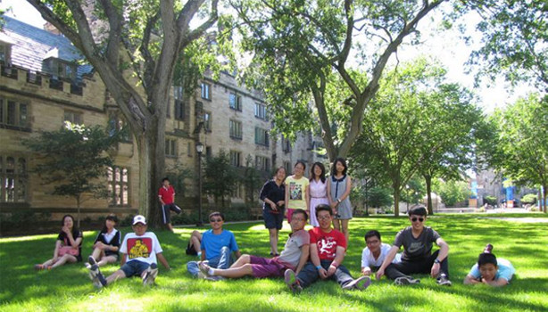

详细
web前端开发工程师
09-10 08:00 北大校园新闻
李慧思

今天是胜利日，看了阅兵，感受到了各种正能量。事后想想，我是通过什么途径感受到的呢？媒介！这是一个时时刻刻都在我们身边，却容易被我们忽略的东西……新华社和人民日..
今天是胜利日，看了阅兵，感受到了各种正能量。事后想想，我是通过什么途径感受到的呢？媒介！这是一个时时刻刻都在我们身边，却容易被我们忽略的东西……新华社和人民日..